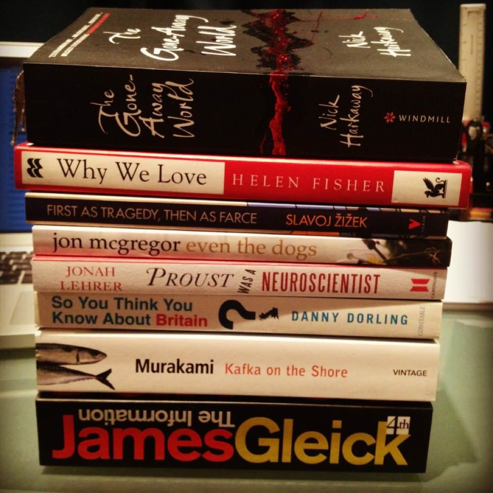

Posted on 2012-04-20 · 1 min read · Books · Photos · April · Lists · Twelve

A hefty reading list that should keep me occupied into the summer. A friend on facebook asked “What course is that for?”, to which I replied “It’s for one of the modules I am doing at the university of life.” This response was quite popular.
See Also
- Sam Selvon, The Lonely Londoners
- Never Mind The Ballards
- Understated Classics #17: Nearly God by Nearly God (Tricky)
- Net Loss
- Album Digest, March 2012